Operating Documentation
Direction 5500113, Rev# 3
Discovery MR450 1.5T Service Methods
Module Version 2.0, Version Date 2/8/10
Operating Documentation |
| Required Persons | Preliminary Reqs | Procedure | Finalization |
|---|---|---|---|
| 2 | Included in 'Procedure' | 2 hours | Included in 'Procedure' |
The Instrumentation Lead Assembly (G-10 Sleeve Assembly 2354044 or G10 Sleeve Assembly with Latching LEMO 5130298) must be replaced when electrical opens or shorts in the Lead Assembly have resulted in the inability to read temperatures, activate the Main Switch Heaters or perform an emergency rundown with the MRU.
| NOTE: |
|
| Item | Qty | Effectivity | Part# | Manufacturer | |
|---|---|---|---|---|---|
| 3.0T Warning Sign & Label Kit | 1 | - | 2379494 | - | |
| Portable Oxygen Monitor | 1 | - | 2287000 | - | |
| Cryogen Safety Wear Kit; one kit per person | 1 | - | 46-271137G1 | - | |
| Nonabsorbent protective clothing (long-sleeve shirt and pants); one set per person | 1 | - | - | - | |
| Nonferrous Safety Shoes; one pair per person | 1 | - | - | - | |
| Brass Master Padlock with Brass Shackle | 1 | - | 46-194427P320 | - | |
| Brass Master Transition Padlock | 1 | - | 2387081 | - | |
| Black & White on Red Lockout Tag, package of 25 | 1 | - | 46-194427P322 | - | |
| Transition LOTO Tag | 1 | - | 46-194427P313 | - | |
| Line Cord Plug Cover, Plugs ≤ 3 in. (76 mm) wide x ≤ 5.875 in. (149 mm) long, Cords ≤ 1.25 in. (31 mm) dia. | 1 | - | 46-194427P321 | - | |
| Digital Voltmeter (DVM), Volt-Ohm Meter (VOM) or non-contact voltage tester | 1 | - | - | - | |
| Sav-Con and Instrumentation Lead Installation/Removal Kit | 1 | - | 46-294872G2 | - | |
| Latching LEMO Tool Kit | 1 | - | 5158913 | - | |
| Helium Regulator and Hose Kit | 1 | - | 46-306734G1 | - | |
| Nonmagnetic Gas Cylinder Cart | 1 | - | 46-306717G1 | - | |
| Nonmagnetic Helium Cylinder Cart | 1 | - | 46-258150P1 | - | |
| Heat Gun | 1 | - | 46-306830G3 | - | |
| Nonmagnetic Pipe Wrench, 1.75 inch (45 mm) minimum jaw opening | 1 | - | - | - | |
| 2 Inch x 4 Inch x 24 Inch (50 mm x 100 mm x 600 mm) Lumber | 1 | - | - | - | |
| Portable Leak Detector (optional) | 1 | - | 2270571 | - | |
| Flashlight | 1 | - | - | - | |
| Titanium Tool Kit, Basic Set 5113258, Titanium Tool Kit, Installation Set 5112581 or other non-ferromagnetic tools (magnets with magnetic fields > 1.5T); one kit | 1 | - | 5113258 or 5112581 | - | |
| HDx Service Platform (can use Universal Service Ladder/Platform 2319156 if service space ≥ 30 inches (762 mm)) | 1 | - | 5155291 (or 2319156) | - | |
| Service Methods documentation for the magnet/enclosures (available through the Common Document Library at gehealthcare.com or through your local GE Healthcare Service Representative) | 1 | - | - | - | |
| Item | Qty | Effectivity | Part# | Manufacturer |
|---|---|---|---|---|
| Gaseous Helium, 235 SCF Nonmagnetic Cylinder (with Regulator) | 1 | - | - | - |
| Leak detection fluid (e.g., Snoop, Bird Dog Quart Spray (p/n DOG-1Q), Big Blue (p/n Rt100S or Rt100G) or Leak-Tec) | 1 | - | - | - |
| Vacuum Grease | 1 | - | 46-252065P24 | - |
| Teflon Tape, .5 inch (12.7 mm) wide; roll | 1 | - | 46-252065P19 | - |
| Masking Tape; roll | 1 | - | - | - |
| Item | Qty | Effectivity | Part# | Manufacturer | |
|---|---|---|---|---|---|
| Instrumentation Lead Assembly (G10 Sleeve Assembly or G10 Sleeve Assembly with Latching LEMO) | 1 | - | 2354044 or 5130298 | - | |
| Teflon Shim Lead O-Ring (included in Field Spares Kit 5265652) | 1 | - | 46-281101P5 | - | |
| Teflon Instrumentation Lead Connector Port O-Ring (included in Field Spares Kit 5265652) | 1 | - | 46-281101P9 | - | |
| Teflon Vertical Penetration O-Ring (included in Field Spares Kit 5265652) | 1 | - | 46-281101P6 | - | |
| ||||
| Potential Fatal Injury! | ||||
| Make sure to review and fully understand all superconducting magnet portions of 2301164PRE, MR Magnet ― Safety Requirements before starting the Instrumentation Lead Assembly Replacement procedure. |
| ||||
| Potential Fatal Injury! | ||||
| Make sure to fully comply with all required items for Instrumentation Lead Assembly Replacement in the 'Magnet & Cryogen Service Safety Requirements' subsection of 2301164PRE, MR Magnet ― Safety Requirements before and while performing the Instrumentation Lead Assembly Replacement procedure. |
| ||||
| Potential Fatal Injury! | ||||
| Have all “Work Assistants” or “Work Observers” comply with the 'Buddy System Requirements & Certification' subsection of 2301164PRE, MR Magnet ― Safety Requirements before starting the Instrumentation Lead Assembly Replacement procedure. |
| ||||
| Asphyxiation & Cold Burn Hazard! | ||||
| A magnet quench during procedure could result in rapid expulsion of liquid helium through the Vertical Penetration. | ||||
| Make sure magnet is ramped down to zero field before removing/replacing the Instrumentation Lead Assembly. |
| ||||
| Asphyxiation Hazard! | ||||
| Instrumentation Lead Assembly Replacement generates odorless, colorless helium gas that displaces oxygen in the air. | ||||
| Make sure magnet room vent exhaust fan is on before starting the Instrumentation Lead Assembly Replacement procedure. |
| ||||
| Potential Cold Burn or Asphyxiation Hazard | ||||
| Internal cryostat pressure build-up to > 5.25 psig will open 5.25 psig relief valve. | ||||
Before removing either Ramp or Fill Port Caps or loosening
any component resulting in the release of cryogen pressure:
|
| ||||
| Potential Cold Burn Hazard | ||||
| Exposure to Cryogens and contact with cold objects is possible during Instrumentation Lead Assembly Replacement. | ||||
| Wear protective clothing, nonabsorbent gloves and goggles when performing the Instrumentation Lead Assembly Replacement procedure. |
| ||||
| Electrical Shock Hazard | ||||
| Contact with connectors leading to an energized Compressor can cause electrical shock. | ||||
| Whenever the input power to the Compressor is disconnected, follow lockout/tagout procedures to make sure power is not supplied to the Compressor. See OSHA Lockout-Tagout. |
| NOTE: | If the site has Magnet Monitor proprietary software, connect to Magnet Monitor and turn off the alarm for vessel pressure. Then turn the vessel pressure control to a high value of .5 psig and a low value of .4 psig. |
| Condition | Reference | Effectivity |
|---|---|---|
Make sure the area is secure and that ALL required Warning Signs are posted to meet the safety requirements stated in 2301164PRE, MR Magnet ― Safety Requirements before starting Instrumentation Lead Assembly Replacement. | - | |
The removal of some magnet enclosure components may be required to complete this Instrumentation Lead Assembly Replacement procedure. Refer to Upper and Side Enclosure Removal (Wide Open enclosures) or to Introduction to HDe & HDx Enclosuresand the appropriate Service Methods documentation (available through the Common Document Library at gehealthcare.com or through you local GE Healthcare Service Representative) before continuing with Instrumentation Lead Assembly Replacement if cover removal is required. | - | |
(continued) | - | |
The magnet must be at zero field in conformance with Magnet Rampdown to Zero Field before starting the Instrumentation Lead Assembly Replacement procedure. | - | |
Make sure the magnet room exhaust fan is on and operational before starting the Instrumentation Lead Assembly Replacement procedure. | - | - |
Make sure the magnet room door is propped open before starting the Instrumentation Lead Assembly Replacement procedure. | - | - |
| ||||
| Make sure the Vertical Penetration is clear of any obstructions before inserting/extracting any tools/apparatus to prevent possible magnet damage. | ||||
Ramp the magnet down to zero field in conformance with Magnet Rampdown to Zero Field.
Shut down the compressor as follows:
Turn 'ON' (upwards) the Coldhead Drive Switch on the Compressor's back panel. See Illustration 1.
Illustration 1: Views of CSW-71D Compressor
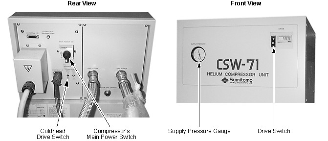
Place the Drive Switch on the Compressor's front panel in the 'O' (off) position. See Illustration 1.
Run the Coldhead for 10 seconds (only) with the Compressor turned off to prevent pressure build-up in the Coldhead, then turn 'OFF' the Coldhead Drive Switch and the Compressor's Main Power Switch. See Illustration 1.
| ||||
| Electrical Shock Hazard | ||||
| Contact with connectors leading to an energized Compressor can cause electrical shock. | ||||
| Whenever the input power to the Compressor is disconnected, follow lockout/tagout procedures to make sure power is not supplied to the Compressor. |
Disconnect and lockout/tagout input power to the Compressor. Verify that no voltage is present by using a DVM or equivalent measuring device.
Turn off all level sensor, diode and main heater sources. Disconnect the Instrumentation Box Assembly (2204623) at instrumentation connector (P1-C). See Illustration 2.
Illustration 2: Instrumentation Connector Location
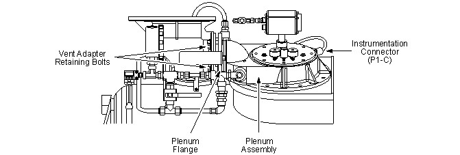
Check the Instrumentation Connector Housing (identified in Illustration 5) at the Plenum (G-10 Sleeve) end after disconnecting P1-C. A red groove around the forward end of the housing indicates a ‘locking’ LEMO connector, which requires the use of Latching Instrumentation LEMO Connector Removal Tool 5145459 for removal. Otherwise, Instrumentation Connector Insertion/Removal Tool 46-281934P1 should be used. See Illustration 3.
Make sure Lexan Top Cover 46-294765G1 (with 1/4 inch Pipe Plugs already installed) is immediately accessible for mounting on the Plenum Assembly when the Shim Lead Assembly is removed. See Illustration 3.
Illustration 3: Tools Used, Sav-Con and Instrumentation Lead Installation/Removal Kit (46-294872G2) and Latching LEMO Tool Kit (5158913)
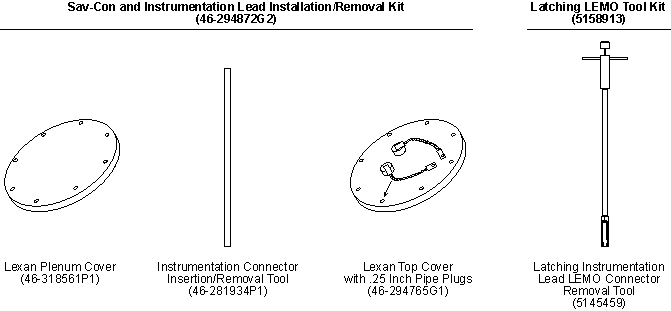
Open Vent Valve V2 to depressurize the Cryostat to 0.2 psig. Close V2. See Illustration 4.
Illustration 4: Helium Vent Plumbing

Loosen and remove the four retaining bolts holding the Vent Adaptor to the Plenum Assembly. See Illustration 2.
Remove the Shim Lead Assembly according to Shim Lead and Baffle Replacement.
Then immediately place the Lexan Top Cover over the opening and secure with the eight bolts removed in Step 7. Tighten finger tight.
| NOTE: | Aligning the scribe mark on Lexan Top Cover towards the Vent is not necessary for this Instrumentation Lead Assembly Replacement procedure. |
Disconnect the .25 inch (6 mm) Instrumentation Lead Vent Line from the Male Connector on top of the Instrumentation Connector Housing. See Illustration 5.
Illustration 5: Instrumentation Lead Male Connector Location
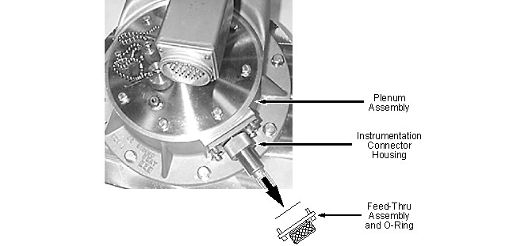
Loosen and remove the Male Connector from the top of the defective Instrumentation Lead Assembly.
Loosen the compression fitting and remove the four socket head bolts holding the Feed-Thru Assembly to the Plenum Assembly. See Illustration 5.
Remove the Feed-Thru Assembly and O-Ring from the Instrumentation Lead Assembly.
Disconnect the union ball joint on the 1/2 inch plumbing from the Plenum Assembly using a pipe wrench. See Illustration 6.
| NOTE: | Make sure the Lexan Plenum Cover is immediately accessible for mounting on the Vertical Penetration Flange when the Plenum Assembly is removed. |
Illustration 6: Magnet Plumbing Views
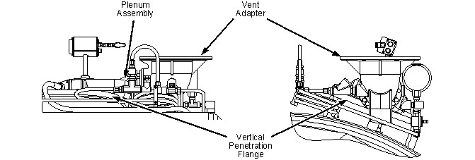
Remove the eight bolts securing the Plenum Assembly to the Vertical Penetration Flange.
Remove the Plenum Assembly by carefully lifting the edge away from connector just enough to clear the flange of the Instrumentation Lead Assembly and slide it off the end of the Instrumentation Connector Housing. See Illustration 7.
Illustration 7: Plenum Assembly Removal
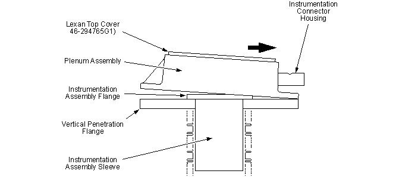
| NOTE: | If there is no red groove around the Instrumentation Connector Housing, remove the Instrumentation Lead LEMO Connector (P101) in conformance with Removal Using Instrumentation Connector Insertion/Removal Tool 46-281934P1, Removal Using Instrumentation Connector Insertion/Removal Tool 46-281934P1. Otherwise, remove it in conformance with Removal Using Latching Instrumentation LEMO Connector Removal Tool 5145459, Removal Using Latching Instrumentation LEMO Connector Removal Tool 5145459. |
| ||||
| Removal Using Instrumentation Connector Insertion/Removal Tool 46-281934P1 must be performed rapidly to prevent cryopumping and frost build-up. | ||||
Loosen and remove the four bolts holding the Instrumentation Assembly Sleeve to the Vertical Penetration Flange. See Illustration 8.
Illustration 8: Attaching the Connector Insertion/ Removal Tool
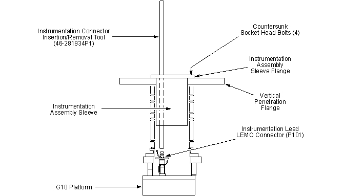
Locate the Connector Insertion/Removal Tool (46-281934P1). Warm it with the heat gun to remove any moisture.
| ||||
| Make sure there is no moisture or other contamination on the Connector Insertion/Removal Tool. Any moisture remaining on the tool may result in the tool freezing to the connector. | ||||
Shine a flashlight through the Instrumentation Assembly Sleeve and inspect the Instrumentation Lead Connector for frost. Remove visible frost by inserting a helium gas hose and blowing warm helium gas at 15 psig on the frosted location.
With the flashlight still shining through the Instrumentation Assembly Sleeve, align the end of the Connector Insertion/Removal Tool with the threaded top on Connector P101 at the bottom of the Vertical Penetration. See Illustration 8.
| NOTE: | Repeated application of helium gas on the Instrumentation Lead Connector may be needed if excessive icing prevents the ability to disconnect the Instrumentation Lead Connector. |
Thread the Connector Insertion/Removal Tool onto Connector P101 (clockwise) until snug and then back off (counterclockwise) a quarter turn. Pull upward on the tool until the connector disengages.
The Connector Insertion/Removal Tool and Instrumentation Lead Assembly can now be removed.
Immediately place the Lexan Plenum Cover (46-318561P1) over the Vertical Penetration Flange and secure with the bolts removed in Removal Preparation, Step 15.
Continue with Instrumentation Lead Replacement, Instrumentation Lead Replacement.
| ||||
| Removal Using Latching Instrumentation LEMO Connector Removal Tool 5145459 must be performed rapidly to prevent cryopumping and frost build-up. | ||||
Loosen and remove the four bolts holding the Instrumentation Assembly Sleeve to the Vertical Penetration Flange. See Illustration 9.
Illustration 9: Attaching Latching Instrumentation LEMO Connector Removal Tool 5145459
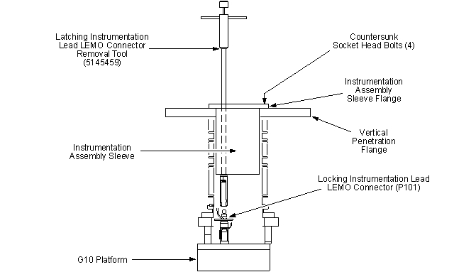
| ||||
| Make sure there is no moisture or other contamination on the Connector Insertion/Removal Tool. Any moisture remaining on the tool may result in the tool freezing to the connector. | ||||
Locate Latching Instrumentation LEMO Connector Removal Tool 5145459. Warm it with the heat gun to remove any moisture.
Shine a flashlight through the Instrumentation Assembly Sleeve and inspect the Instrumentation Lead Connector for frost. Remove visible frost by inserting a helium gas hose and blowing warm helium gas at 15 psig on the frosted location.
With the flashlight still shining through the Instrumentation Assembly Sleeve, insert the Latching Instrumentation LEMO Connector Removal Tool into the Vertical Penetration, down between the Instrumentation Lead Connector and the Negative (-) Main Lead Extension Connector. See Illustration 9 and Illustration 10.
| NOTE: | Repeated application of helium gas on the Instrumentation Lead Connector may be needed if excessive icing prevents the ability to disconnect the Instrumentation Lead Connector. |
Illustration 10: G10 Platform Connectors
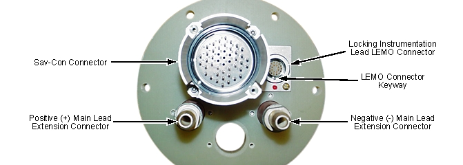
With the open section of the holder facing towards the LEMO connector, turn the Latching Instrumentation LEMO Connector Removal Tool counterclockwise (CCW) and forward, snapping the tool onto the LEMO connector. See Illustration 11.
Illustration 11: Attaching Latching Instrumentation LEMO Connector Removal Tool 5145459 to Instrumentation Lead Connector
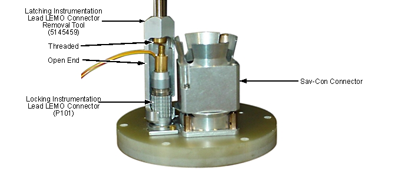
Press the knob down and turn the knob clockwise (CW) to screw the Latching Instrumentation LEMO Connector Removal Tool onto the LEMO connector, until fully engaged.
Press the knob down and pull the handle upward, until the LEMO connector disengages.
The Latching Instrumentation LEMO Connector Removal Tool and the Instrumentation Lead Assembly can now be removed.
Immediately place the Lexan Plenum Cover (46-318561P1) over the Vertical Penetration Flange and secure with the bolts removed in Removal Preparation, Step 15.
Continue with Instrumentation Lead Replacement.
| ||||
| Make sure the Vertical Penetration is clear of any obstructions before inserting/extracting any tools/apparatus to prevent possible magnet damage. | ||||
Wrap a piece of masking tape around the end of the Connector Insertion/Removal Tool opposite the threaded end. The tape will be used to mark the location of the LEMO Connector keyway in Removal Preparation, Step 10.
Screw the Connector Insertion/Removal Tool onto the new LEMO Connector. Place a mark on the masking tape to indicate the location of the LEMO Connector keyway. See Illustration 12.
Illustration 12: LEMO Connector Keyway Identification
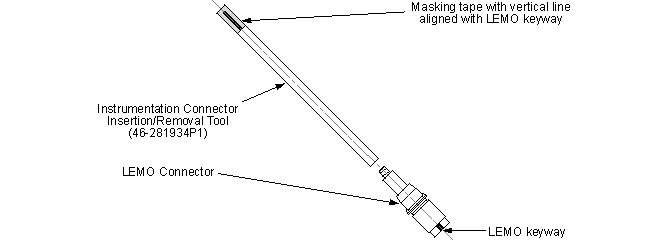
Remove the Lexan Plenum Cover installed in Removal Using Instrumentation Connector Insertion/Removal Tool 46-281934P1, Step 7/ Removal Using Latching Instrumentation LEMO Connector Removal Tool 5145459, Step 9.
Install a new Turret O-Ring (46-281101P6) on the Vertical Penetration Flange for the new Instrumentation Lead Assembly. Use vacuum grease when installing the new o-ring.
Warm the insertion end of the Instrumentation Lead Assembly and the Connector Insertion/Removal Tool to remove any moisture.
Insert the new Instrumentation Lead Assembly into the Penetration Flange.
Secure the new Instrumentation Lead Assembly to the Penetration Flange with the four bolts removed in Removal Using Instrumentation Connector Insertion/Removal Tool 46-281934P1, Step 1/ Removal Using Latching Instrumentation LEMO Connector Removal Tool 5145459, Step 1.
| NOTE: | Before connecting the Instrumentation Lead's LEMO Connector (P101) to J101, make sure there is no ice build-up on J101. |
| NOTE: | Study the location of the keyways on the Connectors P101 and J101 for easy installation. |
Shine a flashlight into the Vertical Penetration. Position the Instrumentation Lead Connector ― using the previously attached Connector Insertion/Removal Tool ― at the bottom of the Vertical Penetration and insert into J101 until properly seated. See Illustration 13 for keyway alignment.
Illustration 13: Position of LEMO Connector Keyway
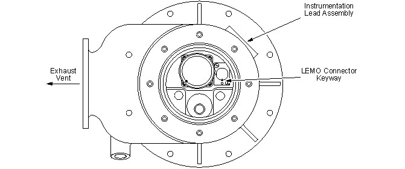
Unscrew the Connector Insertion/Removal Tool from the Instrumentation Lead Connector and remove.
Quickly replace the Turret O-Ring (46-281101P6) and mount the Plenum Assembly with its new Instrumentation Lead Assembly onto the Vertical Penetration Flange using the bolts removed during Removal Preparation, Step 15.
| NOTE: | Apply vacuum grease to the o-ring before replacement. |
Install a new Instrumentation Lead Connector Port O-Ring (46-281101P9) and the Feed-thru Assembly that was removed in Removal Preparation, Step 12. Tighten the compression nut.
Clean the threads of the Male Connector removed in Removal Preparation, Step 11 and wrap with Teflon Tape. Install the Male Connector on the new Instrumentation Lead Assembly and tighten until snug.
Attach the .25 inch (6 mm) Instrumentation Vent Line removed in Removal Preparation, Step 10.
Reconnect the union ball joint.
Reconnect the Vent Adaptor to the Plenum Assembly with the bolts removed in Removal Preparation, Step 7.
Remove the Lexan Top Cover that was installed in Removal Preparation, Step 9.
Prepare the Shim Lead Assembly by replacing the old o-ring with a new Shim Lead O-Ring (46-281101P5). Use vacuum grease when installing the o-ring.
| ||||
| Carefully lower the Shim Lead Assembly into the Vertical Penetration to prevent damage to the baffles. | ||||
| NOTE: | The Shim Lead Assembly must be in the “Disengaged" position. |
| NOTE: | Check for ice build-up on the mating Shim Lead Assembly Connector J100 before installing the Shim Lead Assembly. |
Immediately install the Shim Lead Assembly into the Vertical Penetration with the scribe mark on the Shim Lead Cover Plate aligned with the Vertical Penetration Exhaust Plenum. Secure with the eight 1/4-20 screws and washers removed previously.
Reconnect the .25 inch (6 mm) Exhaust Plumbing to side of the Shim Lead Receptacle Box.
Leak test the Instrumentation Lead and Shim Lead Assembly mountings and all plumbing connections using Snoop Liquid Leak Detector (46-252065P71). Correct any leaks found.
Reconnect P1-C to J1-C and perform the checks as outlined in Temperature Sensor Checks.
Engage the Shim Lead Assembly in conformance with Shim Lead Engagement and Disengagement.
Ramp the magnet back up to field in conformance with Ramping Magnet to Field.
Disengage the Shim Lead Assembly in conformance with Shim Lead Engagement and Disengagement.
| ||||
| Perform all MRU checks in Magnet Rundown Unit (MRU) Checks upon completion of Instrumentation Lead Assembly replacement to make sure no Instrumentation Lead or LEMO connector damage has occurred. Correct any damage found by reconnecting the LEMO connector or replacing the Instrumentation Lead Assembly. | ||||
Check the Instrumentation Lead and LEMO connector for damage by performing the MRU checks in Magnet Rundown Unit (MRU) Checks.
No finalization steps.